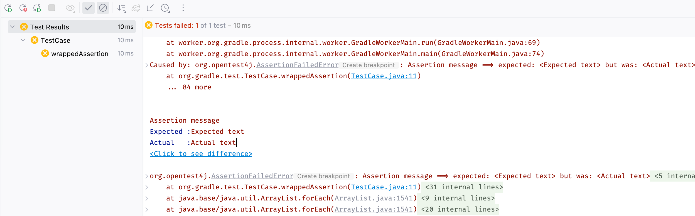

* What went wrong:
Execution failed for task ':project1:compileJava'.
> Compilation failed; see the compiler output below.
Java compilation error (compilation:java:java-compilation-error)
sample-project/src/main/java/Problem.java:6: error: incompatible types: int cannot be converted to String
String a = 1;
^Gradle 9 Webinar
Agenda
Core evolutions
Build comprehensibility
Help messages
Provider API & laziness
Build scalability
Primary strategies
Configuration cache
Gradle 9 and beyond
Core evolutions
Raising the minimum Java version
Require Java 17 and above for running Gradle
Require Java 8 and above for compiling, tests and executing user code
For workers in general
Kotlin DSL
Adopt Kotlin 2.0 language level
Enables leveraging Kotlin 2.0 features in build logic (plugins and scripts)
K2 compiler for better performance
Groovy DSL
Adopt Groovy 4.x
General update of dependencies
Code quality tools defaults
Zinc for Scala compilation
And more …
Bug fixes
Many …
Build comprehensibility
💡
Error, warning Help messages
Help messages
Builds do fail, and that’s okay
What matters is how easy it is to
diagnose the problem
fix the problem
Assertion error handling

Assertion error handling: improved

Compilation errors
Specific errors for common issues
FAILURE: Build failed with an exception.
* What went wrong:
A problem occurred configuring root project 'example'.
> Could not determine the dependencies of task ':consumer:compileJava'.
> Could not resolve all task dependencies for configuration ':consumer:compileClasspath'.
> Could not resolve project :producer.
Required by:
project :consumer
> project :producer requires at least a Java 18 JVM. This build uses a Java 17 JVM.
* Try:
> Run this build using a Java 18 JVM (or newer).
> Change the dependency on 'project :producer' to an earlier version that supports JVM runtime version 17.Improved build output
Better structured
Actionable
Documented
Concrete example - before
FAILURE: Build failed with an exception.
* What went wrong:
Execution failed for task ':dependencies'.
> Could not resolve all dependencies for configuration ':lockedConf'.
> Invalid lock state for lock file specified in '<project>/lock.file'. Line: <<<<<<< HEAD For more information on formatting, please refer to https://docs.gradle.org/8.5/userguide/dependency_locking.html#lock_state_location_and_format in the Gradle documentation.
* Try:
> Run with --stacktrace option to get the stack trace.
> Run with --info or --debug option to get more log output.
> Get more help at https://help.gradle.org.Concrete example - after
FAILURE: Build failed with an exception.
* What went wrong:
Execution failed for task ':dependencies'.
> Could not resolve all dependencies for configuration ':lockedConf'.
> Invalid lock state for lock file specified in '<project>/lock.file'. Line: '<<<<<<< HEAD'
* Try:
> Verify the lockfile content. For more information on lock file format, please refer to https://docs.gradle.org/8.6/userguide/dependency_locking.html#lock_state_location_and_format in the Gradle documentation.
> Run with --stacktrace option to get the stack trace.
> Run with --info or --debug option to get more log output.Provider API & laziness
Provider API
Deferred value resolution
Automatic task dependency management
Improved build performance
Why laziness matters
Challenge: Deferred resolution
Evaluation ordering
afterEvaluatedoes not scaleHow "after" do you need to be?
Challenge: Automatic task dependencies
Tasks produce files
How do you make sure the consumer of that file
dependsOnthe producing task?
Solution

Provider API: Evaluation Ordering
Wire and derive values
Without caring about when it is set
Evaluation is done on demand
Task does not run → No inputs are computed
Provider API: Execution Ordering
Task output properties
used as input to another task
track task dependencies automatically.
Provider API: Performance impact
A lazy computation
used as task input
only needs to be computed if the task executes
Property wiring example
val producer = tasks.register<Producer>("producer")
val consumer = tasks.register<Consumer>("consumer")
consumer {
// Connect the producer task output to the consumer task input
// Don't need to add a task dependency to the consumer task.
// This is automatically added
inputFile = producer.flatMap { it.outputFile }
}
producer {
// Set values for the producer lazily
// Don't need to update the consumer.inputFile property.
// This is automatically updated as producer.outputFile changes
outputFile = layout.buildDirectory.file("file.txt")
}
// Change the build directory.
// Don't need to update producer.outputFile and consumer.inputFile.
// These are automatically updated as the build directory changes
layout.buildDirectory = layout.projectDirectory.dir("output")Adoption challenge
Existing Gradle API is large
Lots of "properties" to convert
Alternative (minor) → Deprecation (minor) → Removal (major)
Disruptive cycle
Long cycle
Bridging plain properties and Provider API is awkward
In short, does not scale
Provider API migration
Do a large scale migration of Gradle APIs in Gradle 9.0
Supported by automatic conversion for plugins
Requires polishing the Provider API itself
⚠️ Does not resolve the adoption by community plugins
Build scalability
🚀
Guiding principles
Overhead should be proportional to the impact of the change
Prioritization based on use-cases
Inner developer loop
Code, Build and Test
Outer developer loop
Sync
Integrate
Stateful CI/CD
Ephemeral CI/CD
Gradle build anatomy

Bars not to scale
Primary strategies
Performance focus
Work avoidance
Parallelism
Execution work avoidance
Up-to-date tasks
Output caching
Tasks
And more
Local and remote
Incremental tasks
Execution work avoidance with Develocity
Remote caching of outputs
Predictive test selection
Execution parallelism
Parallel task execution
Worker API
Parallel test execution
Execution parallelism with Develocity
Test Distribution
Configuration work avoidance
Gradle Configuration Cache
The Configuration Cache is
a feature that significantly improves the inner developer loop performance
by caching the result of the configuration phase
and reusing this for subsequent builds.
What is cached?
Task graph
Task inputs
All the rest is discarded
No
projectstate anymore
Example of invalid input
abstract class SomeTask : DefaultTask() {
@get:Input lateinit var sourceSet: SourceSet
@TaskAction
fun action() {
val classpathFiles = sourceSet.compileClasspath.files
// Do something with the files
}
}needs to become
abstract class SomeTask : DefaultTask() {
@get:InputFiles @get:Classpath
abstract val classpath: ConfigurableFileCollection
@TaskAction
fun action() {
val classpathFiles = classpath.files
// Do something with the files
}
}configured with
classpath.from(sourceSet.compileClasspath)Demo
Additional benefits
Better parallelism at execution
Intra project task parallelism
Reduced memory usage on CC hits
No configuration state is created
Can I use it on my build?
It depends on your build
You may have to refactor custom build-logic
Most widely plugins out there are already compatible
You can selectively declare incompatible tasks
tasks.some { notCompatibleWithConfigurationCache("because") }This is about applying best practices anyway
Gradle 9 and beyond
🔮
Gradle 9 objectives
üêò
Gradle 9 objectives
üêò Core updates
💡 Comprehensibility
🚀 Scalability
Gradle 9 - üêò Core updates
Kotlin Language 2.0 support in our Kotlin DSL
Use the K2 compiler and benefit from its performance
Groovy 4
Tools and libraries updates
Many bug fixes and improvements
Gradle 9 - 💡 Comprehensibility
Provider API 1.0
Feature complete for supported use cases
Provider API Migration
Binary compatible migration for 3rd party plugins
Source-compatible migration for local build logic
Problems API
Gradle 9 - 🚀 Scalability
Configuration Cache recommended
Deprecation warning if not enabled in later 9.x
Gradle 9.0 timeline
Q1 2025 release (tentative)

Ongoing work
Configuration cache limitations
What about the work of the build engineer?
What about dependency upgrades and other build focused engineering tasks?
Did you say cache miss?
On a miss, the configuration phase needs to run
But, with no shared mutable state between projects, it could
Run in parallel
following the projects hierarchy
Be cached incrementally
task sub-graphs cached per project
Isolated Projects Status
Alpha experiment on top of the Configuration Cache
Interesting for early adopters
Focuses on speeding up the IDE experience first
Declarative Gradle
üêò
Declarative Gradle
The presence of code constructs in the software definition, such as variables, local methods and conditional expressions, makes it hard for software developers to work with the build.
It also makes refactoring more difficult for the IDE and other tools to implement.
Declarative Gradle
Clear separation of software definition from build logic
Declarative configuration language
Raised abstraction
First class IDE experience
Declarative Gradle
New experimental initiative
Working group with Google, JetBrains and Gradle.
First EAP available
Second EAP in October 2024
See declarative.gradle.org
Q & A
Thank you for your attention!  |